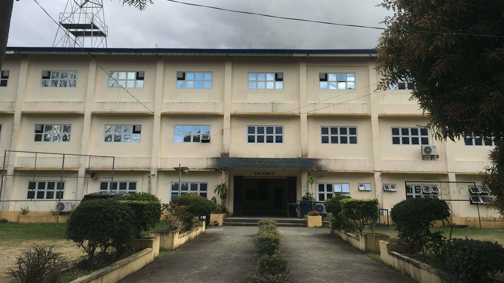

Welcome to CCSICT
Empowering future innovators, programmers, and technology leaders with technical expertise, creativity, and strong ethical values.
Vision
A leading Research University in the ASEAN Region.
Mission
The Isabela State University is committed to develop globally competitive human, technological resources and services through quality instruction, innovative research, responsive community engagement and viable resource management programs for inclusive growth and sustainable development.
3
Degree Programs
16+
Faculty & Staff
100%
Student Focus
About the Department
Established in 1978, the College of Computing Studies, Information and Communication Technology (CCSICT) at Isabela State University – Cabagan Campus provides high-quality education in computing and information technology. The department aims to produce graduates who are globally competitive, innovative, and socially responsible.
QUALITY POLICY
The Isabela State University endeavors to be a lead university in instruction, research, extension and resource generation through continuous improvement of services and commits to comply with the standards set by statutory, regulatory and accreditation bodies.
To uphold this commitment, ISU shall attain the following quality objectives:
- Sustain academic excellence and quality in instruction;
- Generate research breakthroughs;
- Engage in sectoral activities for community development;
- Develop products for glocalization;
- Support students’ participation to local and international fora to enhance their potentialities; and
- Review on periodic basis, the Quality Management System (QMS) and gather feedbacks on the level of client satisfaction as basis for continual improvement.
Academic Programs
Bachelor of Science in Information Technology (BSIT)
Focus Areas: Networking, Web Development, Database Management, System Administration
Career Paths: Network Administrator, Web Developer, IT Support Specialist, Systems Analyst
Bachelor of Science in Computer Science (BSCS)
Focus Areas: Programming, Software Development, Artificial Intelligence, Algorithms
Career Paths: Software Engineer, AI Developer, Data Scientist, Software Architect
Bachelor of Science in Data Science and Analytics (BSDSA)
Focus Areas: Data Analysis, Machine Learning, Business Analytics, Big Data
Career Paths: Data Analyst, Data Scientist, Business Intelligence Analyst, ML Engineer
Faculty & Staff

Prof. Rosemary L. Buraga
Dean

Prof. Dominic C. Cabauatan
IT Program Chair

Prof. Amy Lyn M. Maddalora
CS Program Chair

Prof. Vince Lloyd Balisi
Faculty Member

Prof. Ivy Tarun
Faculty Member

Prof. Ike Tapitan
Faculty Member

Prof. Mario Umayam
Faculty Member

Prof. Daryll Paguirigan
Faculty Member

Prof. Lyle Jan Tarun
Faculty Member

Prof. Via Fugaban
Faculty Member

Prof. Othniel Gatan
Faculty Member

Prof. Madeline Taggueg
Faculty Member

Mr. Alvin Bangloy
Laboratory Technician

Ms. Ethel Grace Cammagay
Office Staff

Mr. Gerald Sarmiento
Utility Worker
Contact Information
Email: ccsict@isu.edu.ph
Office Hours: Monday – Friday | 8:00 AM – 5:00 PM
Location: CCSICT Department, ISU - Cabagan Campus, Catabayungan, Cabagan, Isabela